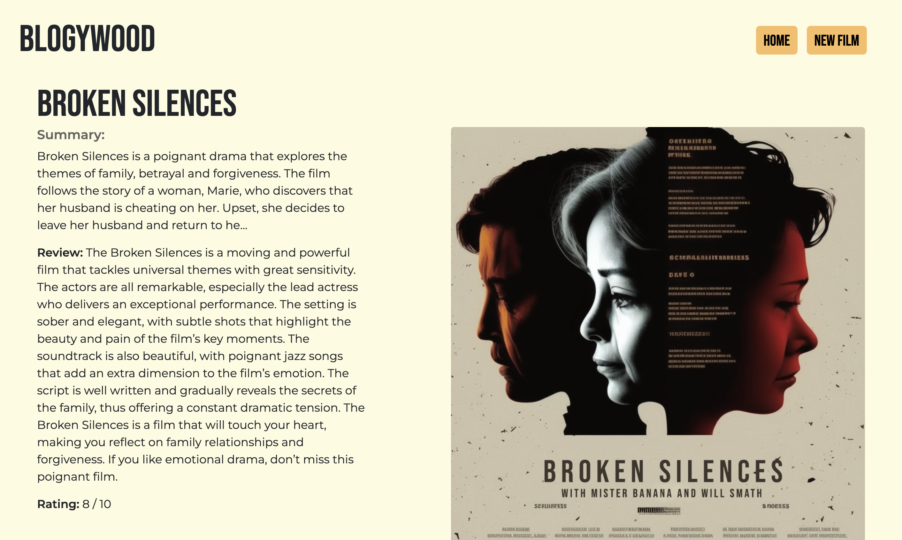

Accueil > Développement > Skulleton
Skulleton est un jeu réalisé sur Unity2D. Le personnage est un squelette touché par une malédiction qui l’empêche de quitter notre monde. Persuadé d’être encore en vie, il cherche à rejoindre sa famille en quittant le cimetière, mais celui-ci semble être sans fin, et ne pas vouloir se séparer de lui…
Lien du projetJ'ai pu réalisé sur ce projet une partie du Game Design, Level Design et une grande partie de la programmation du jeu.
